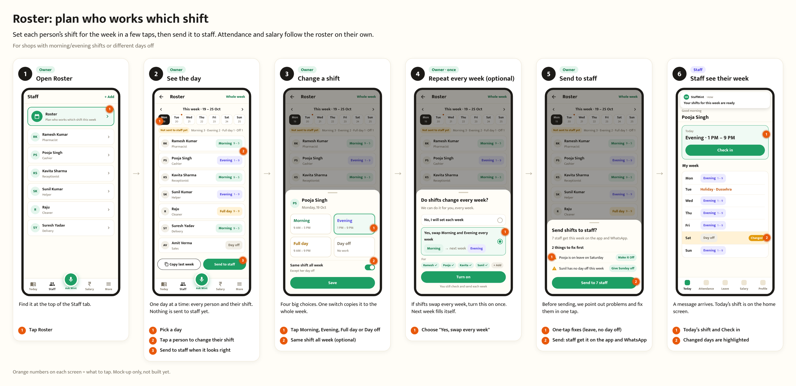
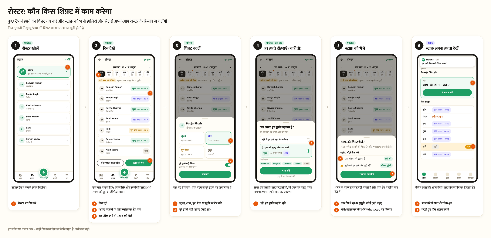
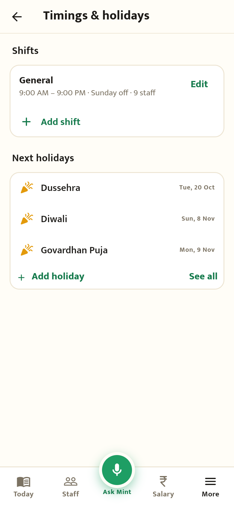
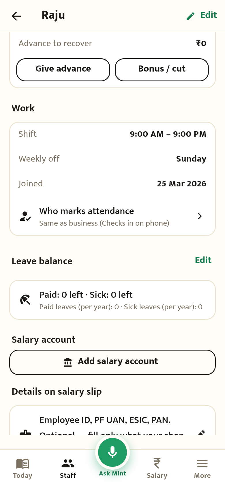
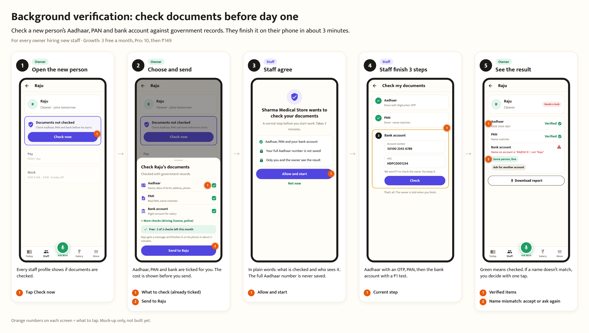
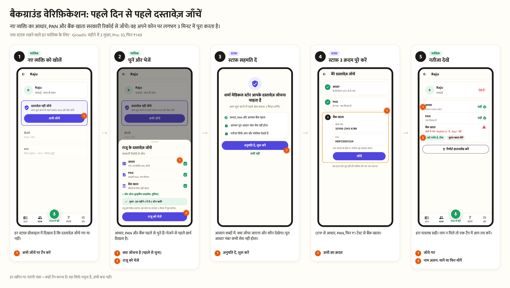
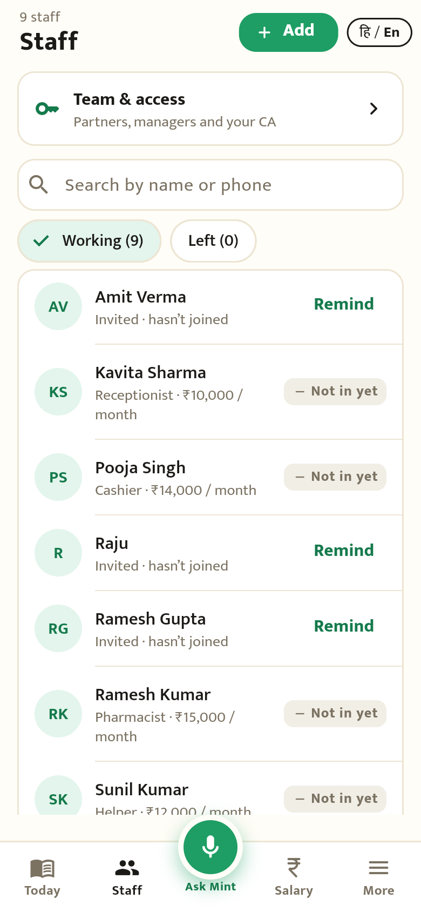
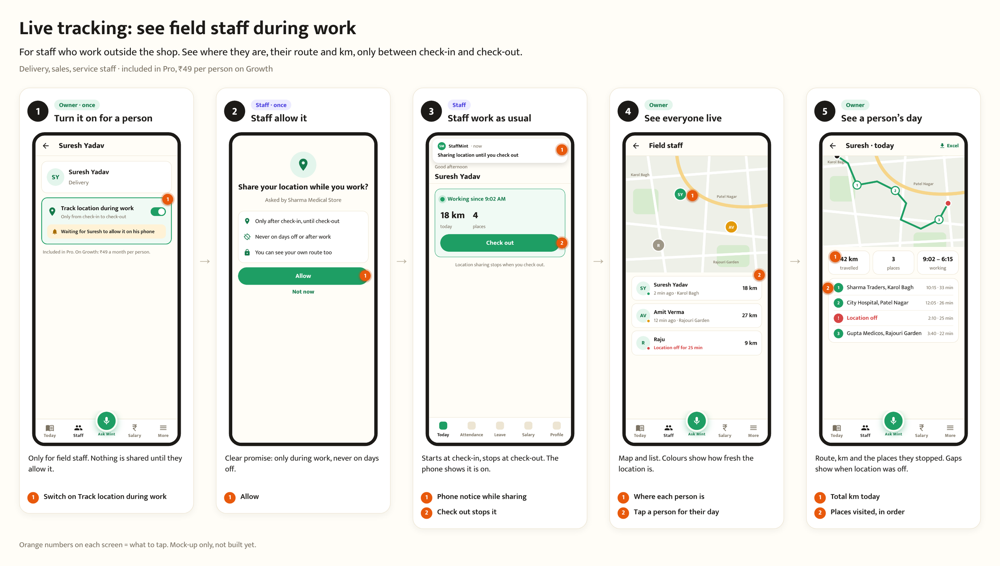
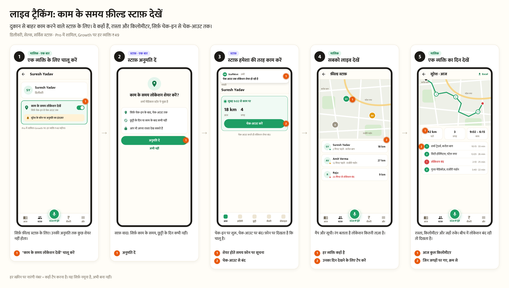
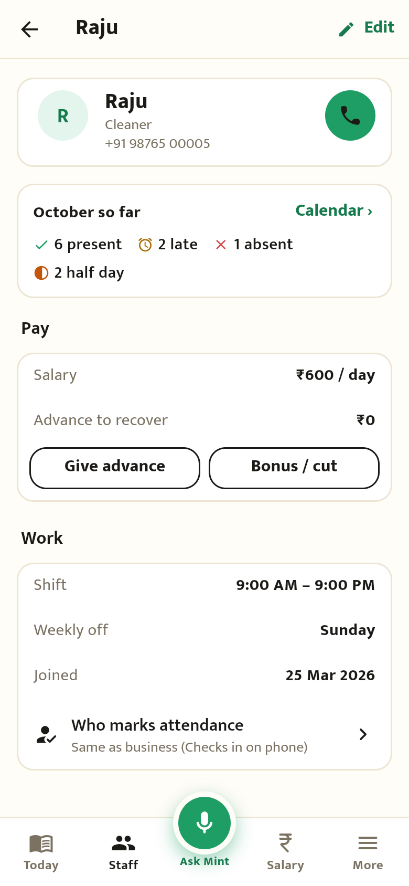

Roster, background verification, live tracking
Step-by-step mock-ups (round 0 of the plan). Each step shows who does it, what the screen is for, and what to tap: the orange numbers on each screen match the list under it. Not built yet. English first, then Hindi.
1 · Roster


Today's app (before)


2 · Background verification


Today's app (before)

3 · Live tracking for field staff


Today's app (before)
